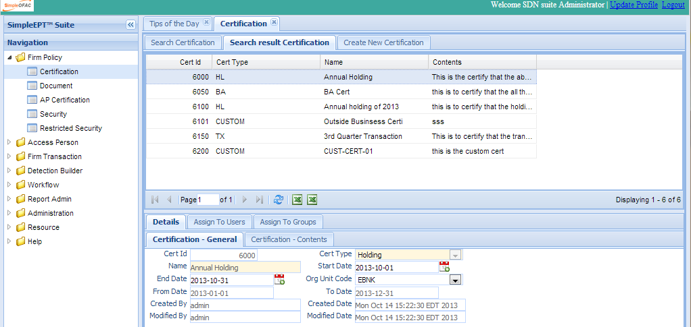
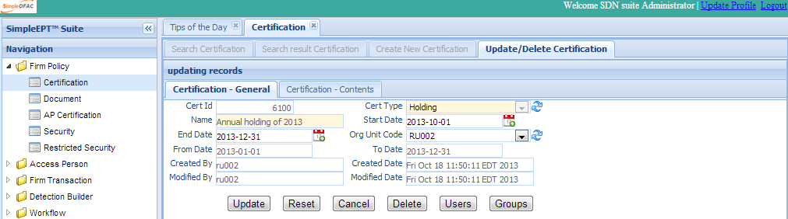
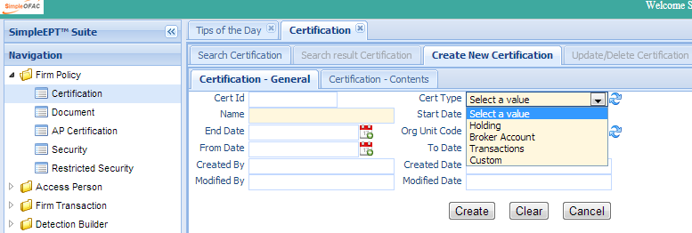

Certification¶
There are several possible certifications that you or your firm may hold: Annual Certificate of Holdings, Annual Certificate of Broker accounts, Quarterly Certificate of Transactions, and custom certifications that are specific to your firm’s needs. The compliance officer or system admin can set up certification and assign access to users or groups. This certification can be used in the rule builder. The access person must submit the required certifications; otherwise their transaction(s) will be failed or denied.
Click the Certification in the left navigation menu under Firm Policy and a new Certification Tab folder will be created in the right panel. There are 3 sub-Tab folders: Search Certification, Search Result Certification and Create New Certification.

Search Certification¶
Search Criteria
| Field Name | Description |
|---|---|
| Cert Id | This is the unique number for the certification entry in the system. |
| Name | Name of this certification entry. |
| Start Date | The start date when access person can start submit certification. |
| End Date | The end date when access person can start submit certification. |
| Cert Type | The type of the certification; it can be Holding, Broker Account, Transaction, Custom, etc. |
| Org Unit Code | The org unit this certification belongs to. |
| CreatedByDate | Date and Time when this entry was created. |
| CreatedByUser | User who created this entry. |
| ModifiedByDate | Last modified date and time. |
| ModifiedByUser | Last modified user. |
| AND | Select AND radio box if you want those criteria added together. |
| OR | Select OR radio box if you want to get the result if either of the criteria met |
Functional buttons¶
- Find: – click the Find button to search.
- Clear:– click the Clear button to clear all the criteria.
Search Result Certification¶
The top part is the table which shows the list of the certification that meet the search criteria. The bottom part is the details, Assign To Users, and Assign to Groups of the selected entry. Each entry can have 0 to many Assign To Users and Assign to Groups. In the details tab, there is a certification-content sub-tab, holding the details contents of this certification.
Update/Delete Certification¶
Double Click the selected record in the table to modify this entry. A new tab folder “Update/Delete Certification” will be added, as shown below.
Functional buttons¶
Update: – Make changes on the certification and save and switch back to the “Search result certification” Tab. Some of the fields in this form are read only, like Cert ID, created/modified user, and date.
Reset:– Reset the data to its initial value and discard all the changes.
Cancel:– Cancel this change and switch back to the “Search result certification” Tab.
- Delete:– Delete this entry and then switch back to the “Search result certification” Tab. If the certification has been assigned to users
and the user has submitted the certification, the certification can not be deleted.
User:– Open a popup window to assign/un-assign the certification to users.
Group:– Open a popup window to assign/un-assign the certification to groups.
Create New Certification¶
Select the “Create New Certification” Tab to create a new entry.
| Field Name | Description |
|---|---|
| Cert Id | This is the unique system generated number. |
| Cert Type | The type of the certification; can be Holding, Broker Account, Transaction, Custom, etc. |
| Name | Name of this certification entry. |
| Start Date | The start date when access person can start submit certification. |
| End Date | The end date when access person can start submit certification. |
| From Date | For some certification; eg holding or transaction. It used to show those transactions within the from/to date. |
| To Date | For some certification; eg holding or transaction. It used to show those transactions within the from/to date. |
| Org Unit Code | The org unit this certification belongs to. |
| CreatedByDate | Date and Time when this certification entry was created. It is a read only field. |
| CreatedByUser | User who created this this certification entry. It is a read only field. |
| ModifiedByDate | Last modified date and time; It is a read only field. |
| ModifiedByUser | Last modified user; It is a read only field. |
Functional buttons¶
- Create: – Click the Create button to create a new certification entry and switch to the “Search result Certification” Tab. Name, content, cert type and org unit code are mandatory fields. If any of them is empty, an error message will be shown.
- Clear:– Click the Clear button to clear all the fields
- Cancel:– Click the Cancel button to cancel the operation and switch back to the “Search result certification” Tab.